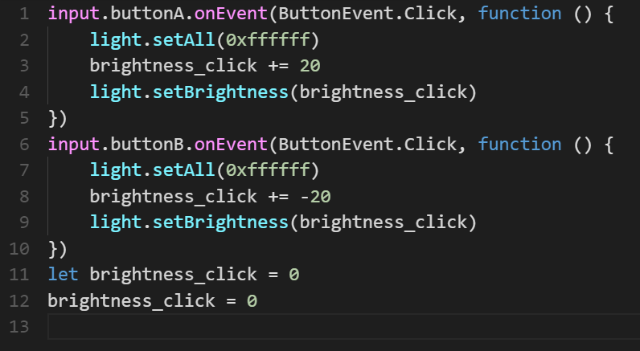

I worked on all of the scenes in the film as we had to restart our project and reshoot the whole film. These
scenes involved the bear getting surgery by the frog cardiac surgeon, the bear receiving the medical bill from the
red bear nurse, and the bear opening the bill and feeling sad about its high medical debt.
Technology and Code

I used the Dragonframe Software to shoot the frames for the film by using the onion-skin, live toggle,
and capture features on the camera board. I also used the Cricut hardware coded with the MakeCode Adafruit
software for the various lightings of the scenes, in which I covered the background with cardboard boxes and
held the Circut over the scenes, changing the brightness of the light by pressing the buttons. The happy scenes
were bright, while the sad scenes were dark and gloomy.


 I worked on all of the scenes in the film as we had to restart our project and reshoot the whole film. These
scenes involved the bear getting surgery by the frog cardiac surgeon, the bear receiving the medical bill from the
red bear nurse, and the bear opening the bill and feeling sad about its high medical debt.
I worked on all of the scenes in the film as we had to restart our project and reshoot the whole film. These
scenes involved the bear getting surgery by the frog cardiac surgeon, the bear receiving the medical bill from the
red bear nurse, and the bear opening the bill and feeling sad about its high medical debt.